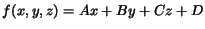
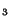
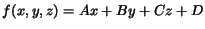
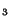
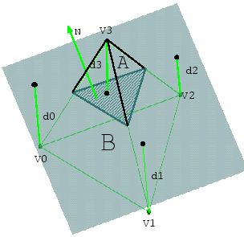

In the class of input datasets with which we are working, material interfaces are represented as triangle meshes. In the case that these triangle meshes are not known, they are extracted from volume fraction data by a material interface reconstruction technique described in [12] and [13] (The volume fractions resulting from numerical simulations indicate what percentages of which materials are present in each cell.). Such an interface reconstruction technique produces a set of crack-free triangle meshes and normal vector information that can be used to determine on which side and in which material a point in space lies.
Within one of our tetrahedra, an approximate material interface is represented as the zero set of a signed distance function. Each vertex of a tetrahedron is assigned a signed distance value for each of the material interfaces in the tetrahedron. The signed distance from a vertex V to an interface mesh I is determined by first finding a triangle mesh vertex V in the triangle mesh describing I that has minimal distance to V. The sign of the distance is determined by considering the normal vector N at V. If N points towards V, then V is considered to be on the ``positive side'' of the interface, otherwise it is considered to be on the ``negative side'' of the interface.
Figure 1 shows a two-dimensional example of a
triangle with several material interfaces and their approximations.
In this figure, the red, green, and blue jagged lines are the original
boundaries and the straight black lines are the approximations derived
from using the signed distance values. The red dashed lines and dots
show the points on the interface between materials A and B used to
compute the signed distance values for the vertices V , V
, V ,
and V
,
and V . The black dashed line demonstrates that the projection of
a point onto an approximation does not always lie inside the cell.
The signed distance function is assumed to vary linearly in the cell,
i.e., a tetrahedron. The distance function is a linear function
. The coefficients for the linear
function defining a boundary representation are found by solving a 4x4
system of equations, considering the requirement that the signed
distance function over the tetrahedron must interpolate the signed
distance values at the four vertices. Figure 2
shows a tetrahedron, a material interface approximation, and the
signed distance values d for each vertex V. The
approximation is shown in cadet blue. The normal vector shown in
green indicates the positive side of the material boundary
approximation. Thus, the distance to V is positive and the
distances for V
. The black dashed line demonstrates that the projection of
a point onto an approximation does not always lie inside the cell.
The signed distance function is assumed to vary linearly in the cell,
i.e., a tetrahedron. The distance function is a linear function
. The coefficients for the linear
function defining a boundary representation are found by solving a 4x4
system of equations, considering the requirement that the signed
distance function over the tetrahedron must interpolate the signed
distance values at the four vertices. Figure 2
shows a tetrahedron, a material interface approximation, and the
signed distance values d for each vertex V. The
approximation is shown in cadet blue. The normal vector shown in
green indicates the positive side of the material boundary
approximation. Thus, the distance to V is positive and the
distances for V , V
, V , and V
, and V are negative.
are negative.
We note that a vertex has at most one signed distance value for each interface. This ensures that the interface representation is continuous across cell boundaries. If a cell does not contain a particular interface, the signed distance value for that interface is meaningless for that cell. Given a point P in an interface polygon and its associated approximation B, the error associated with P is the absolute value of the distance between P and B. The material interface approximation error associated with a cell is the maximum of these distances, considering all the interfaces within the cell.
|

|